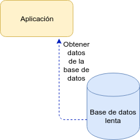
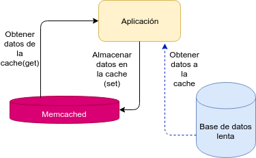

Usar memcached para tener datos a la mano
Posted on dom 22 septiembre 2019 in Tutorial de Python • 2 min read
En este artículo se explicará la razón de uso de memcached, como se instala y como se usa desde Python.
En la siguiente figura se muestra una aplicación que obtiene los datos de una base de datos (lenta), acá se tiene el problema cuando se consulta la base de datos y dependiendo de la cantidad de consultas puede ser que en algún momento la consulta llegue vacía. Lo otro es que si tienes que traer los mismos datos varias veces, para ello en ambos casos se hace necesario usar memcached.

En la siguiente figura se muestra la incorporación de memcached y usarlo junto a la base de datos, para "cachear" los datos de la base de datos.

Este artículo se basa en un artículo de memcached de realpython.
Instalación de memcached
Para el caso de Debian y derivados de Debian se usa apt para instalar memcached:
apt-get install memcached
En el caso de Redhat, Fedora, Centos se tiene:
yum install memcached
Instalación de la librería para Python, para este caso se usa pip:
pip install pymemcache
Se ejecuta memcached:
memcached
El código
A continuación se muestra el código de ejemplo de uso de pymemcache:
#!/usr/bin/env python3
#Se importa el cliente de memcached
from pymemcache.client import base
#Se conecta al servidor memcached
client = base.Client(('localhost', 11211))
#Se almacena en memcached una variable y un valor
client.set('variable', 'valor')
#Se almacena otro valor
client.set("entero",1)
#Se almacena otro
client.set("booleano",True)
variable = str(client.get('variable'))
entero = int(client.get('entero'))
booleano = bool(client.get('booleano'))
#se ve el tipo de las variables
print(type(client.get('variable')))
print(type(client.get('entero')))
print(type(client.get('booleano')))
#Se muestra el resultado tomando los datos de memcached
print(f"variable: {type(variable)}, {variable}")
print(f"entero: {type(entero)}, {entero}")
print(f"booleano: {type(booleano)},{booleano}")
Resultado
La salida del script (mem1.py), se mostró anteriormente se muestra a continuación:
<class 'bytes'>
<class 'bytes'>
<class 'bytes'>
variable: <class 'str'>, b'valor'
entero: <class 'int'>, 1
booleano: <class 'bool'>,True
Como se muestra en la salida, las variables almacenadas en memcached, al obtener sus valores son todos del tipo bytes, toca convertirlos para que sea manipulados en el código.
¡Haz tu donativo! Si te gustó el artículo puedes realizar un donativo con Bitcoin (BTC) usando la billetera digital de tu preferencia a la siguiente dirección: 17MtNybhdkA9GV3UNS6BTwPcuhjXoPrSzV
O Escaneando el código QR desde la billetera: